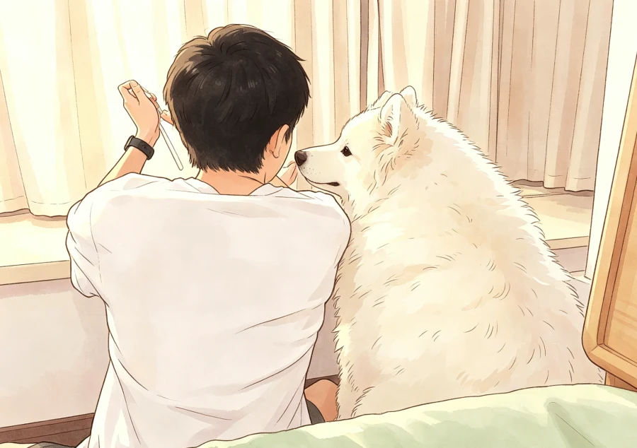
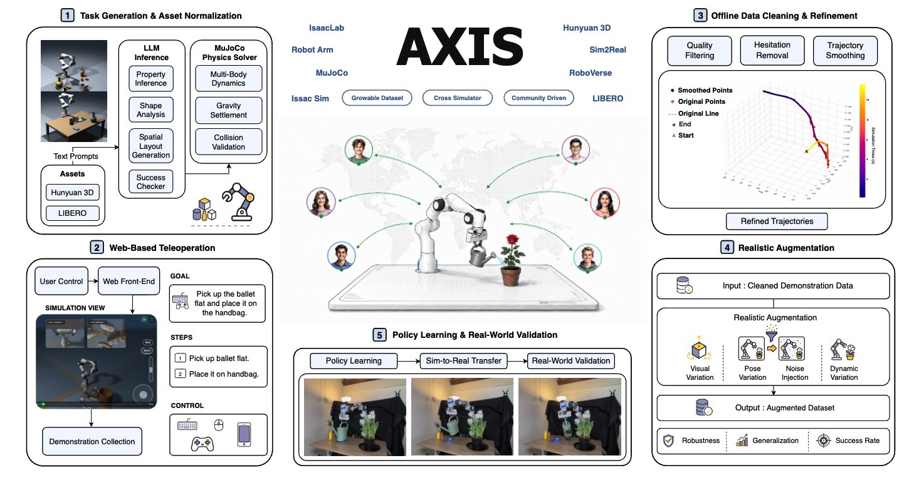

|
Zhexi Luo I am Zhexi Luo, an undergraduate in Computer Science at Sun Yat-sen University, where I conduct research at ISEE@SYSU under the supervision of Wei-Shi Zheng and work with Yi-Lin Wei. Currently, I am a research intern at LinS Lab, where I am advised by Lin Shao and work with Zhixuan Xu (Aris). My current research focuses on dexterous grasping and manipulation, aiming to achieve human-level dexterity. 🏄 Hobbies: Surfing, hiking, badminton, skiing, backpacking, and spending time with my dog. 🎓 I am actively seeking Fall 2027 PhD positions. For relevant opportunities or any thoughts related to my research, feel free to reach out! |

1 / 3
|
📰 News |
|
📚 Research |

|
OmniDexGrasp: Generalizable Dexterous Grasping via Foundation Model and Force Feedback
Yi-Lin Wei*, Zhexi Luo*, Yuhao Lin, Mu Lin, Zhizhao Liang, Shuoyu Chen, Wei-Shi Zheng Accepted to ICRA 2026 arXiv / project page / code A generalizable dexterous framework that leverages generative foundation models to achieve omni-capabilities across diverse user prompts, dexterous embodiments, and grasping tasks. |
|
 |
AXIS: A Growable Community-Driven Data Engine for Scalable Robot Manipulation
AXIS Robotics Team Accepted to IROS 2026 PWMS Workshop arXiv / project page A growable, community-driven data engine that turns browser-collected demonstrations into continually expanding training data for scalable robot manipulation. |
|
Generalizable Humanoid Loco-Manipulation via Spatial Perception and Decision-Making of Multi-Agent Large Model
Zhizhao Liang, Yi-Lin Wei, Xuhang Chen, Mu Lin, Yi-Xiang He, Zhexi Luo, Jun-Hui Liu, Kun-Yu Lin, Wei-Shi Zheng Accepted to ECCV 2026 (Oral) arXiv / project page A generalizable humanoid loco-manipulation framework that leverages multi-agent large models, combining an Active Spatial Brain for spatial perception and task planning with a Generalizable Action Cerebellum for executable action generation without task-specific real-robot data. |
|

|
DriftTrace: Combating Concept Drift in Security Applications through Detection and Explanation
Yuedong Pan, Lixin Zhao, Tao Leng, Zhexi Luo, Lijun Cai, Aimin Yu, Dan Meng Accepted, IEEE Transactions on Information Forensics and Security (T-IFS), 2026 IEEE Xplore A unified framework that combines detecting, explaining, and adapting to out-of-training-distribution (OOD) data for improving model robustness in dynamic open-world environments. |
💼 Experience |

|
LinS Lab, National University of Singapore (NUS) Research Intern, advised by Lin Shao 2025.11 - 2026.9 |

|
Sun Yat-sen University Bachelor in Computer Science and Technology 2022 - Present |
🧑🔬 Academic Service |
|
Conference Reviewer: CVPR 2026, ICCV 2026, ECCV 2026, IROS 2026, NeurIPS 2026 |